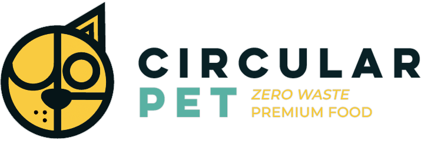

¿Cómo puedo cambiar estas cifras?
Como todo amante de los perros, queremos contribuir en el cuidado del medio ambiente donde vive nuestra mascota. Un ambiente sano y sustentable significa un mayor bienestar para nosotros y nuestra mascota perruna.
Si bien no podemos eliminar completamente la huella de carbono que generan los distintos productos caninos, sí podemos contribuir en el cuidado del rastro de CO2e en gran medida, al mismo tiempo que mantenemos la calidad de vida de nuestro perro.
A continuación te daremos algunos consejos para lograr esto:
Circular pet
Beneficios de la proteína de insecto
Somos una empresa chilena formada el 2020 enfocada en producir pellet seco a base de harina de insecto rico en proteínas y minerales, autorizado por el Servicio Agrícola Ganadero (SAG). Además, todos nuestros productos son desarrollados en procesos circulares sin costo ambiental para nuestro planeta.
Alimentación saludable
Una de las características más importantes de nuestro alimento es su origen a base de insectos. Este tipo de proteína suma una serie de beneficios para la alimentación de tu perro y su bienestar al momento de comer.
Cuidado del medio ambiente
La proteína de insectos comparada a los alimentos caninos tradicionales posee importantes beneficios medioambientales que ayudan a reducir la huella de carbono.
La felicidad de tu perro se mide en el cariño y cuidado que le dedicas diariamente, no en el precio y material de sus productos. Sin embargo, con tus elecciones puedes cuidar al ambiente en el que ambos viven. Juntos pueden disminuir el impacto medioambiental.